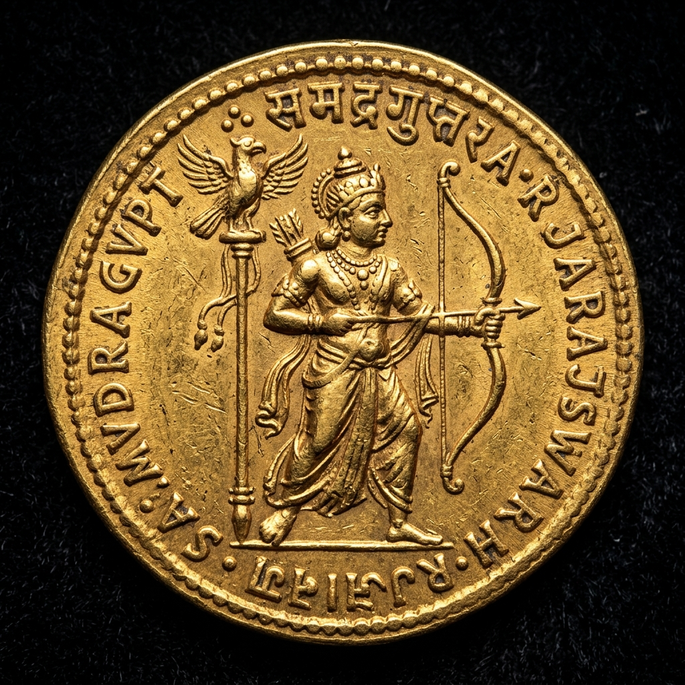
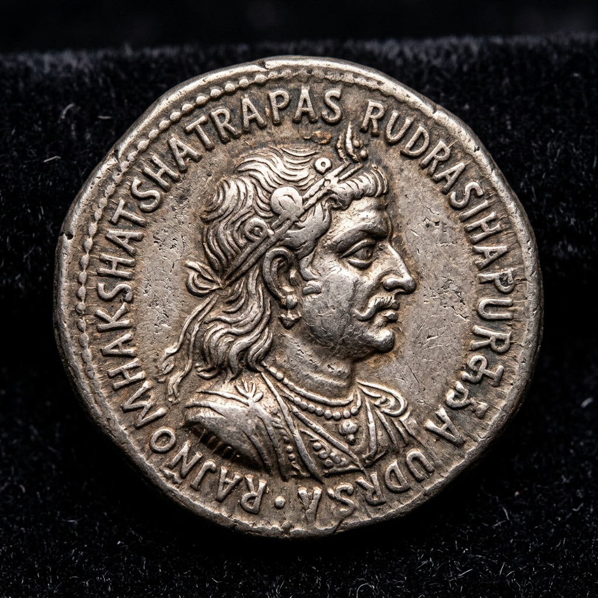
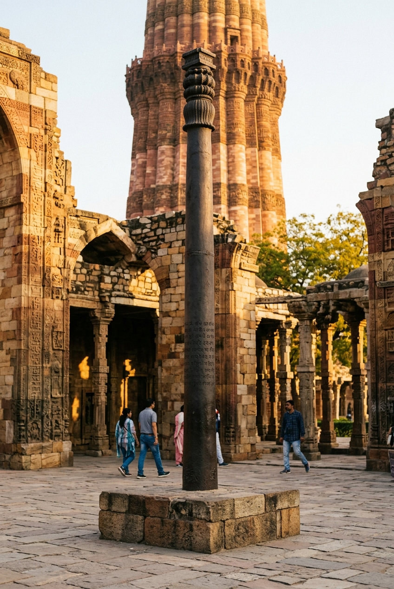
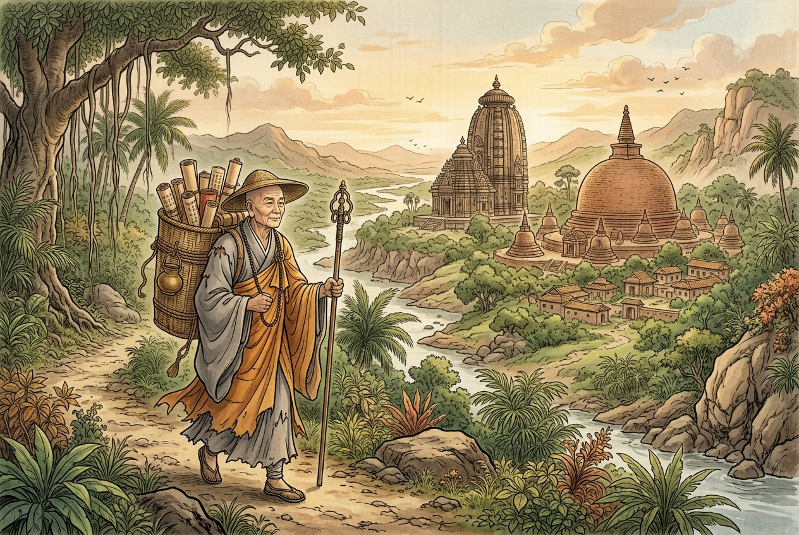

Chandragupta II Vikramaditya
The legendary Gupta Emperor who vanquished the Western Kshatrapas, extended Gupta rule from coast to coast, ushered in classical India's Golden Age, and commissioned the rust-resistant Iron Pillar of Delhi (c. 375 – 415 CE).


At a Glance: Key Historical Metadata
Interactive Campaign Simulator: Expansion of the Gupta Empire
Click through the campaign stages below to dynamically simulate Chandragupta II's military conquests and territorial expansion across South Asia:
Stage 1: Accession & Gangetic Heartlands (c. 375 CE)
Chandragupta II ascends the imperial throne at Pataliputra. He inherits Samudragupta's central realm spanning Northern India and immediately begins fortifying imperial trade routes.
The Mehrauli Iron Pillar: Interactive Metallurgical Breakdown
Standing in the Qutb Complex in Delhi, the famous 7.2-metre Iron Pillar of Delhi bears a six-line Sanskrit inscription in Gupta Brahmi script celebrating King Chandra.
Click on the metallurgical layers below to discover why it has remained rust-free for over 1,600 years:

🏛️ The Mehrauli Iron Pillar, forged under Chandragupta II, celebrated for its 1,600-year rust-resistant metallurgy.
Gupta Coinage Gallery: Interactive Coin Viewer
Click on any coin type below to inspect its iconography and numismatic significance:
Archer Type Gold Dinar
The most popular gold coin type of Chandragupta II's reign. The obverse features the Emperor standing left holding a bow in his left hand and an arrow in his right, with a Garuda banner behind. The reverse depicts Goddess Lakshmi seated on a lotus, holding a lotus flower and cornucopia.
Foreign Accounts: The Travelogues of Faxian (Fa-Hien)
The Chinese Buddhist monk Faxian (Fa-Hien) traveled through Northern India between 399 and 414 CE during Chandragupta II's reign to collect sacred Buddhist manuscripts.
In his travelogue *Record of Buddhist Kingdoms* (*Fo-Kwo-Ki*), Faxian left an invaluable non-courtly eyewitness account of Gupta society:
- Peaceful Governance: Noted that people could travel freely across the realm without official passports or interference.
- Mild Criminal Justice: Observed that there was no capital punishment; fines were levied based on offense severity, and mutilation was reserved only for repeated treason.
- Prosperity & Charity: Described Pataliputra as a grand city with free public hospitals, dispensaries, and charitable rest-houses funded by wealthy citizens.

📜 Faxian (Fa-Hien), Chinese Buddhist pilgrim whose 5th-century travelogue documented the peace and prosperity of Gupta India.
Interactive Map: Major Gupta Imperial Seats & Ports
⚠️ Interactive map showing key Gupta imperial capitals, cultural centers, and trade ports during Chandragupta II's reign.
Chronological Timeline of Reign
Verified Historical Facts
Test Your Knowledge on Vikramaditya 🎯
Which title did Chandragupta II adopt following his decisive victory over the Western Kshatrapas (Sakas) in Malwa and Gujarat?
Academic Sources & References
- Allan, John (1914): Catalogue of the Coins of the Gupta Dynasties in the British Museum, British Museum London.
- Majumdar, R.C. & Altekar, A.S. (1954): The Vakataka-Gupta Age, Motilal Banarsidass.
- Thapar, Romila (2002): Early India: From the Origins to AD 1300, University of California Press.
- Legge, James (1886): A Record of Buddhistic Kingdoms (Faxian's Travelogue Translation), Clarendon Press.
- Archaeological Survey of India (ASI): Mehrauli Iron Pillar & Mathura Inscription Reports.